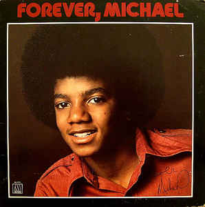
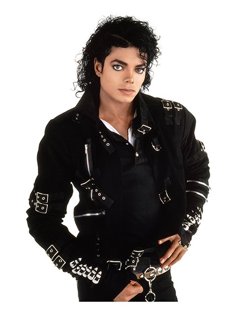
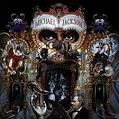
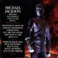
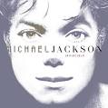
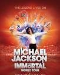
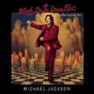
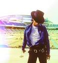

Biografía
Michael Joseph Jackson (Gary, Indiana; 29 de agosto de 1958-Los Ángeles, California; 25 de junio de 2009) fue un cantante, compositor, productor, bailarín, actor y empresario estadounidense.Conocido como el «rey del pop», sus contribuciones y reconocimiento en la historia de la música y el baile durante más de cuatro décadas, así como su publicitada vida personal, lo convirtieron en una figura internacional en la cultura popular. Su música incluye una amplia acepción de géneros como el pop, rhythm and blues (soul y funk), rock, disco y dance, y es reconocido como el «artista más exitoso de todos los tiempos» por los Guinness World Records.
Comenzó su carrera artística a mediados de los años 1960 en la agrupación musical The Jackson 5, en la cual publicó, junto con algunos de sus hermanos, diez álbumes hasta 1975. En 1971, inició su carrera como solista, aunque siguió perteneciendo al grupo. A principios de la década de 1980, Jackson se convirtió en una figura dominante en la música popular. Sus vídeos musicales, entre los que se destacan «Beat It», «Billie Jean» y «Thriller», de su álbum de 1982 Thriller, son acreditados como una ruptura de las barreras raciales y la transformación del medio en una forma de arte y herramienta promocional. La popularidad de estos ayudó a llevar a la cadena televisiva MTV a la fama. El álbum Bad (1987) produjo el número uno de los sencillos «I Just Can't Stop Loving You», «Bad», «The Way You Make Me Feel», «Man in the Mirror» y «Dirty Diana» en el Billboard Hot 100, por lo que se convirtió en el primer álbum en tener cinco sencillos número uno en ese ranking. Continuó innovando con vídeos como «Black or White» y «Scream» a lo largo de la década de 1990, y forjó una reputación como artista solista en varias giras. A través de sus presentaciones en escena y en vídeo, Jackson popularizó una serie de técnicas de baile complicadas, como el robot y el moonwalk, a las cuales dio el nombre. Su sonido y estilo distintivos han influido en numerosos artistas de diversos géneros musicales.
Thriller es el álbum más vendido de todos los tiempos, con ventas estimadas en 65 millones de copias en todo el mundo. Otros álbumes de Jackson, Off the Wall (1979), Bad (1987), Dangerous (1991) y HIStory (1995), también figuran entre los álbumes más vendidos de la historia. Con Off the Wall, Jackson se convirtió en el primer artista en solitario en tener cuatro sencillos del mismo álbum dentro de los diez primeros puestos del Billboard Hot 100. Jackson es uno de los pocos artistas que han sido introducidos en el Salón de la Fama del Rock and Roll dos veces, y también fue incluido en el Salón de la Fama de los Compositores y el Salón de la Fama de la Danza como el único bailarín de música pop y rock. Sus otros logros incluyen varios récords Guinness, 13 premios Grammy, el premio Grammy Leyenda, el premio Grammy a la carrera artística, 26 premios American Music —más que cualquier otro solista masculino— incluyendo el Artista del siglo y Artista de los años 1980, 13 sencillos número uno en los Estados Unidos durante su carrera en solitario —más que cualquier otro artista masculino en la era Hot 100— y ventas estimadas de más de 400 millones de producciones musicales en todo el mundo. Se convirtió en el primer artista en la historia en tener un top 10 en el Billboard Hot 100 en cinco décadas diferentes, cuando «Love Never Felt So Good» alcanzó el número nueve el 21 de mayo de 2014. Jackson viajó por todo el mundo asistiendo a eventos en honor a su solidaridad, y en 2000, el libro Guinness de los récords lo reconoció por apoyar a 39 organizaciones benéficas, más que cualquier otro artista.
Aspectos de la vida personal de Jackson, como su apariencia cambiante, sus relaciones personales y comportamiento, generaron controversia. En 1993, fue acusado de abuso sexual infantil, pero el caso civil fue resuelto fuera de la corte por un monto no revelado y no se presentaron cargos formales. En 2005, fue juzgado y absuelto de nuevas acusaciones de abuso sexual infantil y varios otros cargos después de que el jurado lo declaró inocente en todos los cargos. Mientras se preparaba para su serie de conciertos de regreso, This Is It, Jackson murió de intoxicación aguda de propofol y benzodiazepina el 25 de junio de 2009, después de sufrir un paro cardíaco. El forense del condado de Los Ángeles dictaminó que su muerte era un homicidio, y su médico personal, Conrad Murray, fue declarado culpable de homicidio involuntario. La muerte de Jackson provocó conmoción general, y la transmisión en directo de su funeral fue vista por más de 2500 millones de personas en todo el mundo. En 2010, Sony firmó un contrato con su familia por 250 millones de dólares para retener los derechos de distribución de sus discos y publicar siete álbumes póstumos hasta 2017. Forbes ha clasificado a Jackson como una de las celebridades fallecidas con más ingresos, con ganancias de 825 millones de dólares en 2016, la cantidad anual más alta jamás registrada por la publicación. En 2019 se detallaron nuevas alegaciones de abuso sexual infantil en contra del cantante en el documental Leaving Neverland, lo que causó una reacción internacional tanto en su defensa como en su contra. Pese a la controversia y al debate público sobre el legado de Jackson, su música y marca experimentaron un incremento de popularidad y demanda tras la emisión del documental. De acuerdo con el informe de Forbes de 2020 sobre las celebridades fallecidas con más ingresos, Jackson conservó la posición número uno durante ese año por undécima vez consecutiva.32
Otras Ocupaciones
Michael Jackson escribió dos libros: Moonwalk, autobiografía que relata su vida hasta 1988, y Dancing the Dream, un libro de poemas y reflexiones sobre diversos temas, como el hambre en el mundo, los niños sin hogar, la necesidad de la paz mundial, la vida, y los animales.
Tuvo participación en la industria cinematográfica, puesto que actuó como protagonista en tres películas: Capitán EO, El mago y Moonwalker, además de prestar su voz para The Way of the Unicorn. Como guionista escribió el argumento de su película Moonwalker, así como de muchos de sus videoclips, además de redactar el storybook de E.T., el extraterrestre, por el que ganó un Grammy como Mejor grabación para niños. Como productor participó en las películas Moonwalker y The Way of the Unicorn.
Como dibujante, entre sus trabajos conocidos se destaca una colección de dibujos de Charles Chaplin, los cuales se vendieron en abril de 2007 en una subasta pública junto a otros objetos que fueron de su pertenencia.
Como director de cine, estuvo a cargo del vídeo musical de su canción «Blood on the Dance Floor». Asimismo fue el director artístico de su gira mundial Dangerous World Tour.
Legado
Es considerado uno de los artistas más influyentes de la historia, dentro del terreno musical, intérpretes de diversos géneros, como su hermana Janet, Beyoncé, Usher, Madonna, 50 Cent, Green Day, Prince, Lenny Kravitz, Britney Spears, Justin Timberlake, Ricky Martin,Bruno Mars, Lady Gaga, Ne-Yo, Chris Brown, Luis Miguel, Whitney Houston, Mariah Carey, Justin Bieber, Alicia Keys, Celine Dion, Maroon 5, Shakira, R. Kelly, Jay-Z, The Weeknd, Jason Derulo, entre muchos otros, han reconocido la importancia de Jackson en la música pop contemporánea y han sido influenciados de alguna forma por él, The Baltimore Sun dijo acerca de esto que «Jackson ha influenciado a casi todos los músicos que han surgido después de él de una manera u otra. Esto ha sido inevitable».
Después de su muerte, MTV volvió a emitir sus videos musicales para rendirle homenaje. Esta señal de cable además puso al aire nuevos programas especiales dedicados al cantante, en los que también aparecieron hablando de él varias celebridades y personalidades del ambiente musical declarando acerca de la influencia de Jackson en la música. La emisión de estos especiales y videoclips se llevó a cabo hasta la semana en la que se realizó el funeral de Jackson y el día 29 de agosto, fecha en la que hubiese cumplido 51 años. Todo esto de alguna forma en consecuencia de que décadas atrás, el vídeo musical Thriller hizo de algún modo que MTV, en sus primeros años, se hiciese popular entre los jóvenes. Además fue un artista que trascendió a través del tiempo, debido a que ha sido el único músico hasta ahora en la historia que ha obtenido posiciones en el número uno a lo largo de cuatro décadas distintas.
Danyel Smith, agente principal de Vibe Media Group y el redactor jefe de la revista musical Vibe describe a Jackson como «la más grande de las estrellas». Steve Huey de AllMusic describe a Jackson como «una fuerza imparable, poseedor de todas las habilidades para dominar las listas aparentemente a voluntad: una voz identificable al instante, los ojos saltan con sus pasos de baile, impresionante versatilidad musical y un montón de energía de una estrella pura». BET describió a Jackson «como simplemente el mayor artista de todos los tiempos» y alguien que «revolucionó el video musical y trajo bailes como el moonwalk al mundo. El sonido, estilo, bailes y el legado de Jackson continúa inspirando a artistas de todos los géneros».
En el servicio conmemorativo de Jackson el 7 de julio de 2009, el fundador de Motown, Berry Gordy, proclamó a Jackson como «el mejor artista que haya vivido jamás». El 28 de junio de 2009 Baltimore Sun tituló un artículo que se tituló «7 Maneras en que Michael Jackson cambió el mundo», Jill Rosen escribió que el legado de Jackson fue «duradero, ya que incluyó múltiples facetas», que influyen en los campos incluyendo en la música, el baile, moda, videos musicales y las celebridades.El 19 de diciembre de 2014, el Consejo Británico de Relaciones Culturales nombró la vida de Jackson uno de los momentos culturales más importantes del siglo XX.
En julio de 2009, la Sociedad Lunar de la República, que promueve la exploración, asentamiento y el desarrollo en la Luna, nombró un cráter en honor a Jackson. En el mismo año, para su cumpleaños número 51 pocos meses después de su muerte, Google le dedicó un Doodle especial en la página inicial del buscador. En 2010, dos bibliotecarios universitarios encontraron que la influencia de Jackson se extendía a la academia, con referencias a Jackson en informes sobre música, cultura popular, química y una variedad de otros temas.
Premios y honores
En 1984 Michael Jackson recibió diversos y destacados reconocimientos a lo largo de su carrera, entre ellos se encuentran dos estrellas en el Paseo de la Fama de Hollywood, una con Jackson 5 y otra como solista, obtuvo el premio World Music Awards al artista pop más exitoso del milenio, el premio AMA al artista de la década y el premio Bambi al artista del milenio. Fue incluido dos veces en el Rock and Roll Hall of Fame: en 1997 por el trabajo que realizó como miembro de la banda The Jackson 5 y en 2001 por los logros que tuvo como solista. Jackson también fue incluido en el Salón de la Fama de los Compositores en 2002, y más tarde en el Apollo Legends Hall of Fame en 2010. También se le otorgó el Récord Guinness ' como el artista más exitoso de todos los tiempos. Además, ganó trece premios Grammy (sin contar el Living Legend de 1993 y el póstumo Lifetime Achivement de 2010) y veintiséis premios AMA, trece de sus sencillos llegaron al primer puesto de Billboard Hot 100 y ha vendido mundialmente más de 400 millones de sus producciones musicales, lo que lo hace en uno de los artistas más exitosos de todos los tiempos. En 2009, el año de su muerte el Museo Grammy en Los Ángeles entró en acción con la inauguración de la exposición especial, «Michel Jackson: A Musical Legacy», que sirvió como un seguimiento de «Michael Jackson: HIStyle», exhibición que se abrió en febrero de ese año. En la 52ª edición de los premios Grammy en el 2010, los ganadores del Grammy Smokey Robinson, Celine Dion, Carrie Underwood, Usher y Jennifer Hudson se unieron para rendirle homenaje con una versión 3-D de todas las estrellas de su canción «Earth Song».
Discografía
Got to be there (álbum)

Got to Be There es el primer álbum de estudio como solista con el que Michael Jackson debutó en 1972, lanzado por la compañía discográfica Motown Records, teniendo tan sólo 13 años. Alcanzó un éxito de ventas a ambos lados del Atlántico, como su siguiente disco Ben.
El género del álbum es soul y alcanzó el top 14 de los más vendidos en los Estados Unidos de la música pop. La canción que da título al disco es una balada, y su primer sencillo en solitario que llegó al número 4 de los Charts de los Billboard Hot 100. Rockin' Robin, sería otro éxito de este disco que llegó al 2. Este LP también fue éxito en Latinoamérica, especialmente en Venezuela.
El álbum vendió 4,1 millones de copias en todo el mundo y 3 millones de ellas en los Estados Unidos.
Tras un total de cuatro discos en solitario, Michael Jackson volvería con The Jackson Five.
Ben (álbum)

Ben es el segundo álbum de Michael Jackson a los 13 años de edad, que salió al mercado en agosto de 1972. Tan solo 7 meses después de su primer álbum Got To Be There.
El álbum está formado por baladas románticas, género que no es muy común en la banda musical a la que también pertenecía de los Jackson Five junto a sus hermanos.
La canción de mayor éxito fue "Ben", que da título al álbum y que alcanzó el primer puesto de sencillos de música Pop siendo el primer número 1 de Michael en solitario. El sencillo también alcanzó el quinto puesto como música Soul. Además, ganó un Globo de Oro y fue nominado para la Academy Award.
El álbum vendió 4,4 millones de discos en todo el mundo, 3,3 millones de ellos en EE. UU.
Music and me (álbum)

Music & Me es el tercer álbum de estudio de Michael Jackson en solitario a los 14 años de edad, que se editó en 1973 a través de la compañía discográfica Motown. "With a Child's Heart" fue el único sencillo del álbum, originalmente grabado por Stevie Wonder. "Happy" y "Music and Me" son otras dos canciones de gran talento, que muestran la excelente voz de Michael, y que figurarían en otros álbumes recopilatorios de la carrera musical de Michael como en "The Best of Michael Jackson" en 1975, o en Anthology (Michael Jackson) en 1986, este último, además con canciones de The Jackson Five.
Dado que las ventas no fueron tan buenas como sus dos anteriores álbumes, la Motown decidió centrar la carrera musical de Michael Jackson, con la de sus hermanos en los Jackson Five. Este fue uno de los principales motivos por los que Michael decidió cambiar de compañía discográfica Epic Records, para grabar el álbum en solitario de Off the Wall.
Forever, Michael (álbum)

Forever, Michael is the fourth studio album by American singer Michael Jackson, released by Motown Records on January 16, 1975. The album is credited as having songs with funk and soul material. Edward Holland, Jr., Brian Holland, Hal Davis, Freddie Perren, and Sam Brown III served as producers to Forever, Michael. It is the final album before Jackson's solo breakthrough with his next album, Off the Wall (1979).
Except for the peak position of number 101 on the Billboard 200 and number 10 on the Billboard Top R&B Albums, Forever, Michael failed to chart in other countries. Unlike Jackson's previous studio albums, the album was not commercially successful worldwide. However, Forever, Michael was generally well received by contemporary music critics. As part of promotion for the album, three singles were released from Forever, Michael, all of which were moderate commercial successes on the Billboard Hot 100 and other music charts worldwide.
In 1981, Motown released "One Day in Your Life" as a single, coupled with the compilation album of the same name. The single went to number one in the UK, becoming the 6th best-selling single of 1981 in the country. Songs from the album were reissued in 2009 after Jackson's death in June of the same year as part of the 3-disc compilation album entitled, Hello World: The Motown Solo Collection.
Thriller (álbum)

Thriller es el sexto álbum de estudio del artista estadounidense Michael Jackson, publicado el 30 de noviembre de 1982 por Epic Records. Producido por Quincy Jones —quien trabajó también en el álbum Off the Wall (1979) del mismo artista—, la obra está compuesta por un balance de varios géneros musicales: entre disco y rock, funk y balada, R&B y pop. El propio Jackson escribió cuatro de las nueve canciones del álbum. Las sesiones de grabación iniciaron en abril de 1982 en los estudios Westlake de Los Ángeles, con un presupuesto de producción de US$750 000. El disco contó con la colaboración de Paul McCartney, exmiembro de The Beatles, además de varios integrantes de la banda de rock Toto, entre ellos Jeff Porcaro (batería), Steve Porcaro y David Paich (teclados), Steve Lukather (guitarra) y el teclista Greg Phillinganes.
Siete de las nueve canciones del álbum fueron lanzadas como sencillos: «Beat It», «Billie Jean», «Wanna Be Startin' Somethin'», «P.Y.T. (Pretty Young Thing)», «The Girl Is Mine», «Human Nature» y «Thriller», todos ellos llegaron a los diez primeros puestos en el Billboard Hot 100, con lo que estableció el récord del artista con más canciones top diez de un mismo álbum, con «Beat It» y «Billie Jean» alcanzando el número uno. Con 32 millones de copias vendidas a finales de 1983, Thriller se convirtió en el álbum más vendido de la historia. El disco estableció el estatus de Jackson como una de las estrellas del pop por excelencia, y le permitió superar algunas barreras raciales. Además, con este proyecto, se convirtió en uno de los primeros artistas en utilizar los vídeos musicales como herramientas de promoción, destacando los de «Thriller», «Billie Jean» y «Beat It», que se transmitieron de manera continua en la cadena de televisión MTV.
Thriller sigue siendo el álbum más vendido de la historia, con ventas de 66 millones de copias en todo el mundo para mayo de 2017.1 Es el segundo más vendido de Estados Unidos, siendo certificado con 34 discos de platino por la Recording Industry Association of America (RIAA), solo por debajo de Their Greatest Hits (1971-1975) de la banda Eagles. Ganó un récord de ocho premios Grammy en la edición de 1984, entre ellos álbum del Año y grabación del Año por «Beat It». También ganó un récord de ocho American Music Awards en la edición de 1984.
Desde 2008, una copia de Thriller permanece en el Registro Nacional de Grabación de la Biblioteca del Congreso de Estados Unidos debido a su «gran significado cultural». En la revisión de 2012 de la lista de los 500 mejores álbumes de todos los tiempos de la revista Rolling Stone, se colocó en el número 20, mientras que en la actual revisión de 2020 logró la posición 12.
Bad (álbum)

Bad es el séptimo álbum de estudio del cantante estadounidense Michael Jackson, publicado por Epic Records el 31 de agosto de 1987. Fue escrito y grabado en un periodo de casi un año, y marcó la colaboración final entre el intérprete y el productor Quincy Jones. Jackson se involucró como coproductor y compuso nueve de los diez temas del álbum, dos de los cuales son duetos. Al experimentar con ingeniería de sonido moderna, el tándem incorporó géneros como rock, funk, R&B, dance, soul y hard rock, con implementos como sintetizadores y cajas de ritmos. Bad además explora una variedad de temáticas, incluyendo el sesgo mediático, la paranoia, la discriminación racial, el romance, la superación personal y la paz mundial.
Publicado casi cinco años después del trabajo anterior de Jackson, Thriller, y ampliamente anticipado en el mercado de la música popular, Bad debutó en el número uno de la lista de éxitos Billboard 200, y vendió más de dos millones de copias durante su primera semana en Estados Unidos. También alcanzó el primer puesto en otros veinticuatro países, incluido el Reino Unido, donde vendió 500 000 en sus primeros cinco días y se convirtió en el álbum más comercialmente exitoso del país en 1987. Nueve canciones se divulgaron como sencillos oficiales, y otra para su radiodifusión únicamente. Siete se posicionaron entre «los mejores veinte» del Billboard Hot 100, cinco de ellas en el puesto máximo: «I Just Can't Stop Loving You», «Bad», «The Way You Make Me Feel», «Man in the Mirror» y «Dirty Diana». Esto estableció a Jackson como el artista con más canciones número uno de un mismo álbum en dicho listado. Hasta 1991, Bad era el segundo disco más vendido de todos los tiempos, detrás de Thriller, con 25 millones de copias en todo el mundo.
Se promocionó con el filme Moonwalker (1988), que incluía vídeos musicales de las canciones «Speed Demon», «Leave Me Alone», «Man in the Mirror» y «Smooth Criminal». La película se convirtió en el lanzamiento en vídeo casero más vendido de todos los tiempos. La gira mundial de Bad, la primera en solitario de Jackson, recaudó 125 millones USD, con lo que se convirtió en la gira de conciertos en solitario de mayor recaudación de la década de 1980. Jackson ofreció 132 conciertos en quince países para una audiencia de 4.4 millones de personas, lo que incluye un récord de siete presentaciones con entradas agotadas en el estadio de Wembley. Al tercer concierto, el 16 de julio de 1988, asistieron Diana de Gales y el príncipe Carlos. También fue la última gira de Jackson que se presentó en Estados Unidos.
Bad es uno de los álbumes más vendidos de todos los tiempos, con más de 35 millones de copias vendidas en todo el mundo. En 2017, la Recording Industry Association of America (RIAA) lo certificó con disco de diamante. Varias publicaciones acreditadas lo han nombrado como uno de los mejores álbumes de todos los tiempos. Fue nominado a seis premios Grammy, y ganó en la categoría «Mejor arreglo para álbum - no clásico» y «Mejor videoclip» (por «Leave Me Alone»). En los Billboard Music Awards de 1989, Jackson recibió el primer «Spotlight Award» (que reconoce a artistas destacados) y Bad ganó el premio «Álbum del año».
Of the wall (álbum)

Off the Wall es el quinto álbum de estudio solista de Michael Jackson editado en 1979. Con alrededor de 20 millones de copias vendidas en todo el mundo, es uno de los 100 discos más vendidos de la historia y un hito imprescindible de la música disco. Producido por Quincy Jones, supone para Jackson el haber alcanzado ese cierto grado de madurez que permite ciertas extravagancias. Off the Wall fue lanzado a la venta el mes en que Jackson cumplió 21 años, y no mucho tiempo más tarde, la revista Rolling Stone lo incluyó entre los 100 discos más vendidos de la década de los años 1970.
Cuatro son los temas firmados por Jackson en este álbum, de los cuales el primer sencillo, «Don't Stop 'Til You Get Enough», obtuvo un éxito en los Estados Unidos y en el Reino Unido. Con este tema, Jackson ganó su primer Grammy en la categoría de mejor interpretación vocal de R&B masculina. Stevie Wonder le ofreció a Jackson el tema «I Can't Help It» y Paul McCartney la canción «Girlfriend». Rod Temperton, el letrista que más tarde colaboraría en el álbum Thriller, ofreció en esta ocasión «Rock with You», que alcanzó el número uno en Estados Unidos, o el tema que da título al disco, «Off the Wall». Otra de las canciones, «She's Out of My Life», fue interpretada por Jackson casi siempre en sus giras. Otro tema que alcanzó una popularidad notable sin haber sido lanzado como sencillo fue «Workin' Day and Night», que Jackson también incluyó en muchas de sus giras.
A diferencia de los discos previos y posteriores al mismo, Off the Wall contiene un sonido mucho más soul y se aproxima más a las melodías de música afroamericana, pero también hay funk y disco. Se grabaron tres vídeos musicales con el fin de promocionar el material: «Don't Stop 'Til You Get Enough», «She's Out of My Life» y «Rock with You», de los cuales los dos primeros serían incluidos en diversas compilaciones de grandes éxitos del artista, en especial en Number Ones, un disco que recopila todos sus números uno.
El disco fue reeditado el 16 de octubre de 2001, bajo el nombre de Off the Wall: Special Edition, como se hizo con sus dos discos posteriores, Thriller y Bad. En esta ocasión, se incluyó un nuevo libreto que incluía todas las letras de las canciones (exceptuando las de la nueva edición). Hay varias entrevistas hacia el productor del disco, Quincy Jones, y al compositor Rod Temperton, y se agregaron dos canciones más a esta edición: los demos correspondientes a «Don't Stop 'Til You Get Enough» y «Workin' Day and Night». En octubre de 2009 se publicó una versión demo de «She's Out of My Life» (1978), que se incluyó en el segundo disco de los temas inéditos del álbum This Is It. Cabe destacar que esta versión es totalmente diferente a la original ya que en el demo se puede percibir que Jackson es acompañado con un solo de guitarra.
Dangerous (álbum)

Dangerous es el octavo álbum de estudio del cantante estadounidense Michael Jackson, publicado el 26 de noviembre de 1991. Es el primer álbum tras el reinado de Quincy Jones como productor de Michael Jackson. Después de Quincy Jones, quedó fuera el interés por la melodía: Michael Jackson se centró en el ritmo. De ahí los potentes sonidos que podemos escuchar en Dangerous. Para la creación del disco Jackson contó con la colaboración de Teddy Riley, Heavy D., Bill Bottrell y Bruce Swedien. Es un disco con material completamente inédito; no solo cuenta con una lista de temas variada, también con una portada del pintor Mark Ryden que generó mucha controversia. El álbum produjo números uno como «Black or White», «Remember the Time», «Jam» y otros sencillos como «Will You Be There», de la película Free Willy, y «Who Is It».
Ha vendido 32 millones de copias en el mundo, lo que lo convierte en uno de los más vendidos de la historia. Dangerous es considerado el álbum más personal del cantante porque en él, pues se expresa con mayor libertad creativa. Entre los géneros musicales se encuentra el hard rock («Black or White» y «Give In to Me»); soul o funk que se fusiona con dance o hip hop (fusión llamada new jack swing) en canciones como «Remember the Time», «Jam», «Dangerous», y el góspel en «Will You Be There» o «Keep the Faith».
En «Black or White» solicitó la participación del guitarrista de Guns N' Roses, Slash, para darle una línea más agresiva, además cuenta con la participación de Tim Pierce en la guitarra heavy metal; y el resultado es una mezcla de hard rock, dance y rap. Todo esto fue respaldado por su videoclip, que fue dirigido por John Landis, el mismo de Thriller, y que contó con un cameo del actor Macaulay Culkin.
Siguiendo la misma línea, en el vídeo de «Remember the Time» apareció con la modelo Iman, esposa de David Bowie en ese entonces, el actor Eddie Murphy y el jugador de baloncesto Magic Johnson. En «In the Closet», el cantante se muestra más sensual, alternando aquí con la modelo Naomi Campbell, y en «Jam» con el baloncestista Michael Jordan.
HIStory: Past, Present and Future, Book I (álbum)

HIStory: Past, Present and Future, Book I es el noveno álbum de estudio del cantante, compositor y bailarín estadounidense Michael Jackson, publicado el 16 de junio de 1995; actualmente es el disco recopilatorio de Michael Jackson más vendido de la historia con 20 millones de copias vendidas (se contabilizan 40 millones de copias venidas en algunos registros al tratarse este de un disco doble). Abarca dos discos compactos, el primero consiste en una recopilación de los mayores éxitos de Jackson en su carrera como solista, y el segundo un disco con canciones propias nuevas, a modo de su quinto álbum de estudio con Sony. Su primer proyecto desde que fuera falsamente acusado por abuso de menores en 1993, HIStory es, posiblemente, el disco más maduro de Michael Jackson en su carrera como solista.
Invincible (álbum)

Invincible es el décimo y último álbum de estudio del cantante estadounidense Michael Jackson, lanzado el 30 de octubre de 2001 por Epic Records. Fue el sexto álbum de estudio de Jackson lanzado a través de Epic, y el último lanzado antes de su muerte en 2009. El álbum cuenta con apariciones de Carlos Santana, The Notorious B.I.G. y Slash. Incorpora R&B, pop y soul, y de manera similar al material anterior de Jackson, el álbum explora temas como el amor, el romance, el aislamiento, la crítica de los medios y los problemas sociales.
La creación del álbum fue costosa y laboriosa. Jackson comenzó la producción multigénero en 1997 y no terminó hasta ocho semanas antes del lanzamiento del álbum en octubre de 2001. Se informó que costó $ 30 millones de dólares hacer el álbum, lo que lo convierte en el álbum más caro jamás hecho. No hubo una gira de conciertos para promocionar Invencible; Jackson se negó a hacer una gira,1 que se suma a la ya creciente brecha entre él y Sony Music Entertainment. Tras la decisión de Sony de poner fin abruptamente a la promoción del álbum, Jackson hizo acusaciones en julio de 2002 de que Tommy Mottola era un "diablo" y un "racista" que no apoyaba a sus artistas afroamericanos, sino que los usaba para beneficio personal.
Invincible debutó en el número uno en el Billboard 200 y en otros diez países del mundo. El álbum fue certificado doble platino en enero de 2002 por la Recording Industry Association of America (RIAA) y ha vendido más de 8 millones de copias en todo el mundo. El primer sencillo del álbum, "You Rock My World", alcanzó el puesto número diez en el Billboard Hot 100 y fue nominado a mejor interpretación vocal pop masculina en los Premios Grammy de 2002. El álbum generó dos sencillos más, "Cry" y "Butterflies", así como el sencillo promocional "Speechless".
Inmortal (álbum)

Immortal es el primer disco de remixes de música originalmente grabada por el artista estadounidense Michael Jackson, con The Jackson 5 / The Jacksons, lanzado el 21 de noviembre de 2011, por Epic Records, a modo de banda sonora para el tour del Cirque Du Soleil, The Immortal World Tour, que debutó el 2 de octubre de 2011 en Montreal
Blood on the Dance Floor: HIStory in the Mix (álbum)

Blood on the Dance Floor: HIStory in the Mix es un álbum de remezclas del cantante y bailarín estadounidense Michael Jackson.
También considerado por muchos como álbum de estudio por contener 5 canciones nuevas, aunque dadas las diversas opiniones se le adjudican ambos términos.
Fue publicado por la compañía discográfica Epic Records el 20 de mayo de 1997. Contuvo ocho canciones que fueron remixadas de su anterior álbum, HIStory: Past, Present and Future, Book I, y cinco nuevos temas. Recibió opiniones diversas de los críticos de música contemporánea. Al respecto, fue criticado por tener letras superficiales. Tuvo dos sencillos y múltiples discos de platino, en varios países, al venderse más de 6 millones de copias en todo mundo, convirtiéndose así en el álbum de remezclas más vendido de la historia.
Then, Now, Forever (álbum)

Era el CD póstumo que iba a estar compuesto de 2 CD, de 9 temas cada uno, el CD1 contiene los temas originales, (tal cual los dejó Michael Jackson) y el CD2 contiene temas remezclados, cuenta también con un Bonus Track, el cual es la versión original de "Hollywood Tonight"; canción editada para el álbum Michael. Este álbum fue sustituido por "Xscape", anunciado el 1 de abril de 2014. Fue lanzado el 13 de mayo, a 2 días de ser lanzado como preventa en itunes, rompió récord al ocupar la 2.ª posición, con más de 350 000 copias en un día y medio, récord histórico.
Filmografía
| Año |
Película |
Rol |
Director |
| 1978 |
The Wiz |
Espantapájaros |
Sidney Lumet |
| 1986 |
Captain EO |
Capitán EO |
Francis Ford Coppola |
| 1988 |
Moonwalker |
Él mismo |
Jerry Kramer |
| 1997 |
Ghosts |
Varios |
Stan Winston |
| 2002 |
Hombres de negro II |
Agente MJ (cameo) |
Barry Sonnenfeld |
| 2004 |
Miss Cast Away and the Island Girls |
Agente MJ (cameo) |
Bryan Michael Stoller |
| 2009 |
Michael Jackson's This is it |
Él mismo |
Kenny Ortega |
| 2011 |
Michael Jackson: La vida de un ídolo |
Él mismo |
Andrew Eastel |
| 2012 |
Bad 25 |
Él mismo |
Spike Lee |
Giras
- Bad World Tour (1987-89)
- Dangerous World Tour (1992-93)
- History World Tour (1996-97)
- Invincible World Tour (2001-2002) (cancelado)
- This Is It (2009-2010) (cancelado)
Fallecimiento
En la mañana del 25 de junio de 2009, Michael Jackson sufrió un paro cardiorrespiratorio en su mansión alquilada de Holmby Hills. Los miembros del servicio llamaron al teléfono de emergencia 911 para solicitar auxilio a las 12:21 PDT (UTC-7). Los paramédicos, quienes llegaron nueve minutos después, lo encontraron sin pulso ni respiración, por lo que le aplicaron reanimación cardiopulmonar y lo trasladaron al Ronald Reagan UCLA Medical Center, ubicado en Los Ángeles a la 1:14 p. m. Pero a pesar de los esfuerzos de los médicos fue declarado muerto a las 2:26 p. m.
El primer informe oficial calificó su muerte como «provocada por la combinación de calmantes», en el que el principal sospechoso era Conrad Murray, el que según una carta de despedida temporal a sus pacientes en Las Vegas, por «una oportunidad de las que solo se presenta una vez en la vida», los dejaba para acompañar a Michael Jackson a su serie de conciertos como médico personal, por el cual iba a recibir 150 000 dólares al mes. Después de realizar su autopsia, los forenses del Instituto Forense de Los Ángeles aseguraron que la muerte de Jackson había sido provocada por una intoxicación de propofol, suministrado por Murray. Finalmente el informe oficial calificó su muerte como «intoxicación aguda de propofol».
El funeral público de Jackson se celebró el 7 de julio de 2009 en el Staples Center de la ciudad de Los Ángeles, antes de que se realizara un servicio memorial para familiares y allegados al artista. La ceremonia pública fue seguida en directo por más de 2500 millones de personas en todo el mundo. En el evento participaron los cantantes Stevie Wonder, Lionel Richie, Mariah Carey, John Mayer, Jennifer Hudson, Usher, Jermaine Jackson y Shaheen Jafargholi. Berry Gordy y Smokey Robinson dieron un discurso, mientras que Queen Latifah leyó el poema «We had him», el cual fue escrito para la ocasión por Maya Angelou. Su funeral privado se celebró el 3 de septiembre de 2009 en el Gran Mausoleo (Holly Terrace) situado en el cementerio Forest Lawn de Los Ángeles, donde fue enterrado.
El 8 de febrero de 2010, el tribunal acusó de «homicidio involuntario» a Murray, utilizando como prueba el informe oficial de su muerte (que se dio a conocer en internet el mismo día del juicio). El acusado, quien se declaró «no culpable», pagó una fianza de 75 000 dólares para no ingresar en prisión. En 2011, Murray fue condenado a cumplir cuatro años de cárcel, por el homicidio involuntario de Jackson. El médico solo cumplió la mitad de los cuatro años de presidio que se le otorgaron, siendo puesto en libertad en 2013 en el marco de un plan del estado para reducir el hacinamiento en los centros de detención.
Por otra parte, en 2015 Katherine Jackson, la madre del artista, perdió su batalla judicial contra AEG Live a la que responsabilizaba de la muerte de su hijo. La demandante había acusado a dicha empresa por negligencia al contratar a Murray. Sin embargo, la Corte de Apelaciones de California sentenció que el doctor estaba cuidando a Jackson como un contratista independiente.
Trabajos Póstumos
Después de su muerte, Michael Jackson se convirtió en el artista que más ventas registró en 2009 en los EE. UU., con más de 8,2 millones de álbumes, mientras que en el resto del mundo se vendieron más de 35 millones de álbumes en los doce meses posteriores a su muerte. Mientras tanto, la revista Forbes lo calificó en la lista anual de 2010 como la tercera de las celebridades fallecidas que ganan más dinero, con 90 millones de dólares.
Puesto que la demanda del público respecto a Jackson era inmensa, Epic Records (de Sony Music Entertainment) publicó el 12 de octubre un sencillo inédito titulado «This Is It», que fue acompañado el mismo mes por el lanzamiento de un nuevo álbum doble póstumo del artista el 26 de octubre, llamado, otra vez This Is It, que reúne los ensayos musicales para la gira homónima; donde la primera parte contiene los ensayos de la gira y la segunda contiene temas inéditos, incluido un poema redactado por Michael, llamado «Planet Earth».
Añadido a eso, Kenny Ortega estrenó mundialmente la película llamada Michael Jackson's This Is It dos días después del estreno del álbum, el 28 de octubre de 2009. La cual, de igual modo, trata sobre los últimos ensayos musicales para la gira homónima antes de su muerte, a través de una recopilación de vídeos que filmó el equipo técnico de la gira. El álbum y la película tuvieron conjuntamente una recaudación de más de 250 millones de dólares.
Durante el auge de las ventas del artista, Sony, que tenía intenciones de llegar a acuerdos para extender y continuar con el uso de su material generado, puesto que los derechos de la distribución de estos tenían que expirar en 2015. Sin embargo, el 16 de marzo de 2010 un movimiento encabezado por la Columbia/Epic Label Group (de Sony Music Entertainment) firmó el mayor contrato en la industria musical con los herederos del cantante por 250 millones de dólares por los derechos de explotación de diez proyectos musicales (entre ellos los ya publicados cómo las ediciones especiales de Bad y Thriller, y los álbumes Michael en 2010 y Xscape en 2014 junto con algunos trabajos inéditos) por lo menos hasta 2017, que sería la fecha de lanzamiento del último álbum póstumo. El acuerdo, como dijo Rob Stringer, presidente de Columbia/Epic Label Group: «No es solo un acuerdo musical basado en cuántas copias de CD se venden o sobre cuántas canciones se descargan en línea», sino que «comprende también los derechos de audio para teatro, cine y videojuegos».